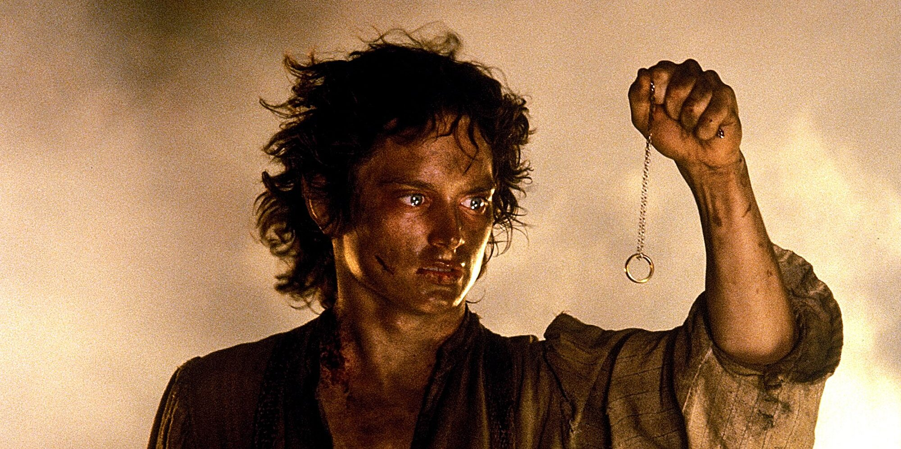
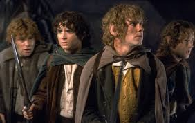

The Lord of the Rings is the saga of a group of sometimes reluctant heroes who set forth to save their world from consummate evil. Its many worlds and creatures were drawn from Tolkien’s extensive knowledge of philology and folklore.
In total the Lord of the Rings has won about 475 awards based on 800 nominations
